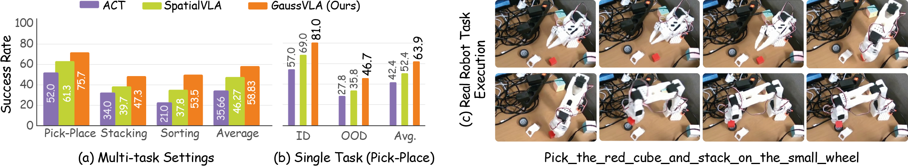

GaussVLA: Geometry-Aware Spatial Reasoning for Vision-Language-Action Model
The arXiv release includes the supplementary material.
Abstract
Vision-Language-Action (VLA) models encode visual observations as flat 2D patch tokens that carry no intrinsic geometric structure, and augmenting them with dense monocular depth injects per-pixel scalar values that encode neither surface orientation nor geometric confidence. This leaves the policy with limited structured spatial reasoning for action prediction. We propose GaussVLA, a mamba-based VLA that incorporates two custom modules: Gaussian Spatial Tokenizer (GST) to lift frozen semantic and depth features into compact 3D Gaussian tokens, pools geometrically salient regions with learned queries, and Depth-Aware Chain-of-Thought (DA-CoT) that performs structured, non-autoregressive geometric reasoning under language and flow-time conditioning. Across both simulation and real-world evaluations, GaussVLA demonstrates strong spatial-manipulation performance while remaining parameter efficient. On LIBERO, it achieves 93.5% average success and 100.0% success on the Spatial suite with only 200M parameters, improving over SpatialVLA by 19.7% relative average success while remaining significantly more parameter-efficient. Our experimental results suggest that geometry-aware representations can provide a practical path toward more efficient and deployable robot manipulation.
Method
Pick a module to see what it contributes. Click any figure to enlarge it.

What it does
Lifts frozen semantic (SigLIP) and dense depth (Depth Anything V2) features into compact 3D Gaussian tokens, then pools geometrically salient regions with learned queries instead of a flat patch grid.
What it buys
Adding GST alone lifts the LIBERO average from 78.1% to 90.5%, and LIBERO-PRO from 11.2% to 29.0%, for +11.2M parameters and +1.4 ms of latency.
What it does
Performs structured, non-autoregressive geometric reasoning over the Gaussian tokens under language and flow-time conditioning, so reasoning cost does not grow with a token-by-token decode.
What it buys
DA-CoT is what carries the long-horizon suites: 83.0% vs 77.0% on LIBERO-Long and 92.3% vs 78.2% on LIBERO-90 at 20 trials.

LIBERO Benchmark
Click any column header to sort. Toggle the filter to compare only against similarly sized models.
| Method | Venue | Spatial | Object | Goal | Long | Average | Params |
|---|---|---|---|---|---|---|---|
| Diffusion Policy | RSS'23 | 78.3 | 92.5 | 68.3 | 50.5 | 72.4 | 80M |
| CoRL'24 | 53.8 | 81.5 | 56.3 | 41.7 | 58.3 | 24M | |
| QueST | NeurIPS'24 | 89.0 | 90.0 | 88.4 | 87.0 | 88.6 | 152M |
| OpenVLA | CoRL'24 | 84.7 | 88.4 | 79.2 | 53.7 | 76.5 | 7B |
| SpatialVLA | RSS'25 | 88.2 | 89.9 | 78.6 | 55.5 | 78.1 | 4B |
| ThinkAct | NeurIPS'25 | 88.3 | 91.4 | 87.1 | 70.9 | 84.4 | 7B |
| CoT-VLA | CVPR'25 | 81.5 | 91.6 | 87.6 | 69.0 | 82.43 | 7B |
| Mask2Act | BMVC'25 | 76.1 | 68.7 | 75.1 | 30.6 | 62.6 | 7B |
| TraceVLA | ICLR'25 | 84.6 | 85.2 | 75.1 | 54.1 | 74.8 | 4B |
| π0 | RSS'26 | 90.0 | 86.0 | 95.0 | 73.0 | 86.0 | 3.3B |
| SUREFlow | IROS'26 | 94.8 | 91.0 | 93.8 | 90.2 | 92.5 | 179.1M |
| GaussVLA Ours | BMVC'26 | 100.0 | 95.8 | 95.3 | 83.0 | 93.5 | 200M‡ |
Success rate (%) on the four LIBERO suites. ‡200M trainable parameters; the full system is roughly 1B including the frozen SigLIP and Depth Anything V2 backbones.

Build the Model
Switch the two modules on and off to see the exact cost and benefit of each. Every number below is measured.
Turn on a module to see its effect.


Real Robot (SO-101)
Hover a bar to read its exact success rate.
Multi-task success rate (%) on the SO-101 arm.
| Method | ID | OOD | Avg. |
|---|---|---|---|
| ACT | 57.0 | 27.8 | 42.4 |
| SpatialVLA | 69.0 | 35.8 | 52.4 |
| GaussVLA Ours | 81.0 | 46.7 | 63.9 |

Pick_the_red_cube_and_stack_on_the_small_wheel.
Single-Episode Rollout
One LIBERO episode at full length, uncut.
Video Presentation
BibTeX
@inproceedings{Sarowar_2026_BMVC,
author = {Md Selim Sarowar and Md Tanvir Islam and Sungho Kim and Sangtae Ahn},
title = {GaussVLA: Geometry-Aware Spatial Reasoning for Vision-Language-Action Model},
booktitle = {37th British Machine Vision Conference 2026, {BMVC} 2026, Lancaster, UK, November 23-26, 2026},
publisher = {BMVA},
year = {2026},
url = {https://bmva-archive.org.uk/bmvc/2026/assets/papers/Paper_121/paper.pdf}
}